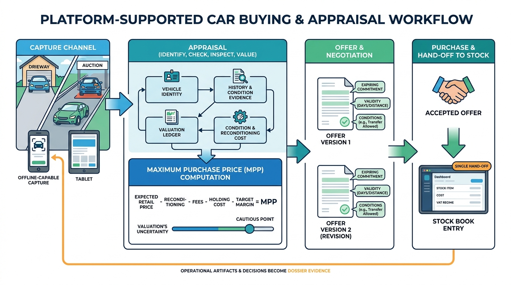

Part IV — DEALER: The Used-Car Workflow
Buying Right: Trade-In Appraisal, Sourcing and Maximum Purchase Price

Image generated by Google Gemini (gemini-3-pro-image-preview)
Part IV — DEALER: The Used-Car Workflow

Image generated by Google Gemini (gemini-3-pro-image-preview)